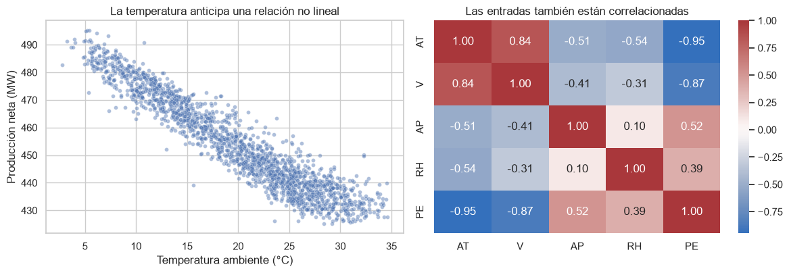
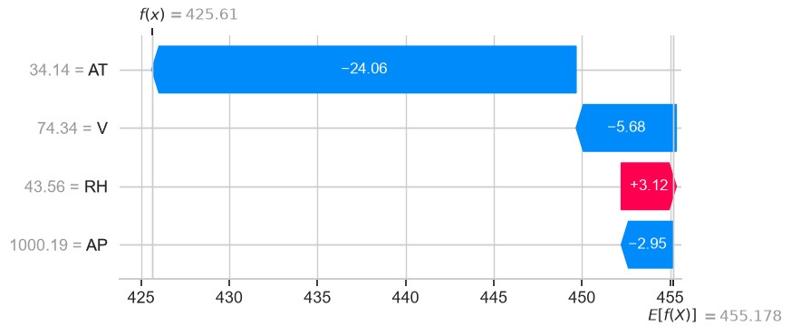

Sesión 9 · Tuning de una MLP para producción eléctrica
Caso. Una planta de ciclo combinado opera a carga completa y necesita anticipar su producción eléctrica neta horaria a partir de temperatura, vacío de escape, presión y humedad.
Pregunta central. ¿Qué arquitectura y régimen de entrenamiento ofrecen el menor error fuera de muestra bajo un presupuesto explícito, y qué podemos decir —con prudencia— sobre las predicciones del modelo final?
Al terminar podremos responder:
¿La MLP supera referencias lineales y tabulares?
¿Qué configuraciones exploraron KerasTuner y Optuna y cuánto costaron?
¿El resultado se sostiene entre semillas?
¿En qué condiciones falla más?
¿Qué muestran PDP/ICE y SHAP sobre la función predictiva?
1. Contrato experimental antes de entrenar
El test se separa al inicio y permanece cerrado hasta elegir la configuración.
Los escaladores se ajustan exclusivamente con train durante el tuning.
Ambos tuners reciben el mismo espacio conceptual y presupuesto máximo.
EarlyStopping limita épocas dentro de cada trial; Optuna además puede podar trials.
La selección usa validación. MAE, RMSE y \(R^2\) de test se calculan una sola vez al final.
El entorno DL_TUNING_MODE controla el presupuesto: smoke, class o full.
import hashlibimport jsonimport osimport platformimport timeimport warningsfrom pathlib import Pathos.environ.setdefault("TF_CPP_MIN_LOG_LEVEL", "2")import keras_tuner as ktimport matplotlib.pyplot as pltimport numpy as npimport optunaimport pandas as pdimport seaborn as snsimport shapimport sklearnimport tensorflow as tffrom sklearn.base import clonefrom sklearn.dummy import DummyRegressorfrom sklearn.ensemble import HistGradientBoostingRegressorfrom sklearn.linear_model import LinearRegressionfrom sklearn.metrics import mean_absolute_error, mean_squared_error, r2_scorefrom sklearn.model_selection import train_test_splitfrom sklearn.preprocessing import StandardScalerwarnings.filterwarnings("ignore", category=FutureWarning)sns.set_theme(style="whitegrid", context="notebook")SEED =260819FEATURES = ["AT", "V", "AP", "RH"]TARGET ="PE"def find_root():for candidate in [Path.cwd(), *Path.cwd().parents]:if (candidate /"pyproject.toml").exists():return candidateraiseFileNotFoundError("No se encontró la raíz del curso")ROOT = find_root()MODE = os.getenv("DL_TUNING_MODE", "class").lower()BUDGETS = {"smoke": {"trials": 2, "epochs": 5, "patience": 2, "repeats": 1},"class": {"trials": 8, "epochs": 60, "patience": 8, "repeats": 3},"full": {"trials": 24, "epochs": 100, "patience": 8, "repeats": 3},}if MODE notin BUDGETS:raiseValueError(f"DL_TUNING_MODE debe ser uno de {list(BUDGETS)}")BUDGET = BUDGETS[MODE]RUN_DIR = ROOT /"notebooks"/"semana-04"/"runs"/ MODERUN_DIR.mkdir(parents=True, exist_ok=True)tf.keras.utils.set_random_seed(SEED)print({"python": platform.python_version(),"tensorflow": tf.__version__,"keras_tuner": kt.__version__,"optuna": optuna.__version__,"shap": shap.__version__,"mode": MODE,**BUDGET,})
d:\Documentos\Universidad Externado\Pregrado en Ciencia de Datos\Deep Learning\.venv\Lib\site-packages\tqdm\auto.py:21: TqdmWarning: IProgress not found. Please update jupyter and ipywidgets. See https://ipywidgets.readthedocs.io/en/stable/user_install.html
from .autonotebook import tqdm as notebook_tqdm
El conjunto Combined Cycle Power Plant contiene 9.568 promedios horarios recogidos entre 2006 y 2011 mientras la planta operaba a carga completa. Las variables son:
AT: temperatura ambiente (°C).
V: vacío de escape (cm Hg).
AP: presión ambiente (mbar).
RH: humedad relativa (%).
PE: producción eléctrica neta (MW).
La fuente no incluye fecha ni identificador temporal. Por ello solo podemos hacer una partición aleatoria y debemos declarar como limitación que no medimos generalización hacia años futuros.
fig, axes = plt.subplots(1, 2, figsize=(12, 4.2))sns.scatterplot(data=data.sample(1800, random_state=SEED), x="AT", y="PE", s=18, alpha=.45, ax=axes[0])axes[0].set(title="La temperatura anticipa una relación no lineal", xlabel="Temperatura ambiente (°C)", ylabel="Producción neta (MW)")sns.heatmap(data.corr(), annot=True, fmt=".2f", cmap="vlag", center=0, ax=axes[1])axes[1].set_title("Las entradas también están correlacionadas")plt.tight_layout()plt.show()

Pregunta antes de continuar
Si AT y V están correlacionadas, ¿qué combinación poco realista podría crear una curva de dependencia parcial al variar una de ellas y congelar la otra? Conserve esta inquietud para interpretar el modelo final.
X = data[FEATURES].copy()y = data[TARGET].copy()# 15 % test; del 85 % restante se reserva 15 % del total para validación.X_dev, X_test, y_dev, y_test = train_test_split( X, y, test_size=.15, random_state=SEED)X_train, X_val, y_train, y_val = train_test_split( X_dev, y_dev, test_size=.15/.85, random_state=SEED)x_scaler = StandardScaler().fit(X_train)y_scaler = StandardScaler().fit(y_train.to_numpy().reshape(-1, 1))X_train_s = x_scaler.transform(X_train).astype("float32")X_val_s = x_scaler.transform(X_val).astype("float32")y_train_s = y_scaler.transform(y_train.to_numpy().reshape(-1, 1)).astype("float32")y_val_s = y_scaler.transform(y_val.to_numpy().reshape(-1, 1)).astype("float32")split_table = pd.DataFrame({"partición": ["train", "validación", "test cerrado"],"filas": [len(X_train), len(X_val), len(X_test)],"uso": ["aprender pesos", "seleccionar hiperparámetros", "evaluar una vez"],})split_table
partición
filas
uso
0
train
6696
aprender pesos
1
validación
1436
seleccionar hiperparámetros
2
test cerrado
1436
evaluar una vez
3. Referencias antes de la red
Una red no se justifica por ser una red. Comparamos primero:
la media de train;
una regresión lineal;
gradient boosting, una referencia fuerte para datos tabulares.
Estas métricas se calculan en validación, todavía no en test.
WARNING:tensorflow:From d:\Documentos\Universidad Externado\Pregrado en Ciencia de Datos\Deep Learning\.venv\Lib\site-packages\keras\src\backend\common\global_state.py:82: The name tf.reset_default_graph is deprecated. Please use tf.compat.v1.reset_default_graph instead.
WARNING:tensorflow:TensorFlow GPU support is not available on native Windows for TensorFlow >= 2.11. Even if CUDA/cuDNN are installed, GPU will not be used. Please use WSL2 or the TensorFlow-DirectML plugin.
modelo
MAE_MW
RMSE_MW
R2
segundos
0
Media
15.026
17.287
-0.001
0.009
1
Lineal
3.614
4.571
0.930
0.013
2
Boosting
2.397
3.361
0.962
3.333
3
MLP fija
3.314
4.284
0.939
14.441
¿Por qué no GridSearch exhaustivo?
Con 1–3 capas y tres anchos posibles hay \(3 + 3^2 + 3^3 = 39\) arquitecturas. Al multiplicar por cuatro tasas de dropout, tres batches y apenas cuatro tasas de aprendizaje discretizadas aparecen 1.872 configuraciones. Early stopping reduce épocas, pero no elimina esta explosión de trials.
5. KerasTuner: construcción y entrenamiento como hiperparámetros
HyperModel.build() controla la arquitectura y el optimizador. HyperModel.fit() recibe el modelo ya construido y permite elegir el batch sin perder los callbacks internos del tuner.
El callback reporta val_loss después de cada época. El MedianPruner puede abandonar una configuración cuando su trayectoria es poco competitiva frente a trials previos. Early stopping sigue activo: los mecanismos cumplen papeles distintos.
Esta tabla no es un campeonato universal entre librerías. KerasTuner usa optimización bayesiana; Optuna usa TPE y pruning. Comparamos lo que ocurrió bajo este protocolo: mejor validación, trials terminados, tiempo y configuración propuesta.
trace = pd.DataFrame([ {"herramienta": "KerasTuner/Bayes","trials": len(kt_results),"completos": int((kt_results["estado"] =="COMPLETED").sum()),"podados": 0,"mejor_val_loss": float(kt_results["val_loss"].min()),"segundos": kt_seconds, }, {"herramienta": "Optuna/TPE","trials": len(study.trials),"completos": sum(t.state == optuna.trial.TrialState.COMPLETE for t in study.trials),"podados": sum(t.state == optuna.trial.TrialState.PRUNED for t in study.trials),"mejor_val_loss": float(study.best_value),"segundos": opt_seconds, },])trace.round(4)
herramienta
trials
completos
podados
mejor_val_loss
segundos
0
KerasTuner/Bayes
8
8
0
0.0619
129.5754
1
Optuna/TPE
8
4
4
0.0593
88.3297
def config_from_values(values): n_layers =int(values["n_layers"])return {"n_layers": n_layers,"units": [int(values[f"units_{i}"]) for i inrange(n_layers)],"dropout": float(values["dropout"]),"batch_size": int(values["batch_size"]),"learning_rate": float(values["learning_rate"]), }candidate_configs = {"KerasTuner": config_from_values(keras_tuner.get_best_hyperparameters(1)[0].values),"Optuna": config_from_values(study.best_trial.params),}pd.DataFrame(candidate_configs).T
n_layers
units
dropout
batch_size
learning_rate
KerasTuner
2
[64, 32]
0.2
64
0.002775
Optuna
3
[32, 32, 64]
0.0
64
0.000191
8. El mejor trial puede ser una inicialización afortunada
Reentrenamos el ganador de cada herramienta con tres semillas en modos class y full. En smoke usamos una sola repetición porque ese modo verifica integridad, no estabilidad. Elegimos por MAE medio de validación y conservamos la dispersión.
Compare la MLP afinada con boosting. ¿La diferencia en MW compensa la búsqueda, la sensibilidad a semillas y el costo de mantener dos herramientas de tuning? Una recomendación válida puede concluir que la red no se justifica.
10. ¿Dónde falla el modelo final?
Auditamos observado frente a predicho, residuos y MAE por cuartil de temperatura. Esta segmentación no reabre la selección: ocurre después de fijar y evaluar el modelo.
Para una grilla de temperatura o vacío sustituimos esa columna en todas las observaciones de test y promediamos las predicciones. Las líneas ICE conservan respuestas individuales.
Esto describe el modelo, no una intervención causal. Las combinaciones artificiales pueden salir de las regiones más frecuentes del conjunto.
Elegimos la hora con menor predicción del test y usamos 100 observaciones de desarrollo como background. Con solo cuatro variables, el explicador exacto model-agnostic es viable.
El waterfall reparte la diferencia respecto a la predicción de referencia. La atribución depende del modelo y del background; no prueba que modificar una variable produzca ese cambio físico.
AT V AP RH predicción_MW observado_MW
0 34.14 74.34 1000.19 43.56 425.609985 434.23

13. Dictamen para el responsable de la planta
Conclusión de esta ejecución (mode=class)
Optuna encontró la mejor MLP bajo el presupuesto disponible. Su arquitectura 4 → 32 → 32 → 64 → 1, sin dropout, batch 64 y learning rate \(1,91\times10^{-4}\) alcanzó un MAE medio de validación de 3,169 MW, 7,1 % menor que el candidato de KerasTuner (3,412 MW). La variación entre tres semillas fue pequeña (SD = 0,020 MW), por lo que la diferencia no parece explicarse únicamente por una inicialización afortunada.
El pruning redujo cómputo, pero no permite declarar que Optuna sea universalmente superior. Optuna completó 4 de 8 trials y podó 4; consumió 88,3 s, frente a 129,6 s de KerasTuner. El ahorro observado fue cercano al 32 %, pero se compararon TPE con pruning y búsqueda bayesiana sin pruning, no solamente dos implementaciones equivalentes.
El tuning mejoró la red, no el ganador global. En test, la MLP afinada logró MAE = 3,115 MW, RMSE = 4,008 MW y \(R^2=0,942\). Mejoró 8,1 % el MAE de la MLP fija y 11,9 % el modelo lineal. Sin embargo, boosting obtuvo MAE = 2,359 MW, RMSE = 3,156 MW y \(R^2=0,964\): un MAE 24,3 % menor que la MLP afinada. Para estos datos tabulares, no hay evidencia para recomendar la red como modelo productivo principal.
El error medio es relativamente estable, aunque persisten casos extremos. El MAE por cuartil de temperatura varió entre 2,823 y 3,346 MW y el sesgo medio permaneció cerca de cero. El segmento más difícil fue el de temperaturas más bajas, seguido por el más cálido; los boxplots también muestran errores aislados superiores a 10 MW que ameritan revisión individual.
La función aprendida atribuye el mayor cambio a la temperatura. El PDP de AT desciende de aproximadamente 482 a 435 MW entre 6 y 32 °C; el de V disminuye de forma más moderada, alrededor de 460 a 449 MW. Las curvas ICE revelan heterogeneidad, especialmente para V, por lo que el promedio no representa igual a todas las observaciones. Son asociaciones del modelo, no efectos causales ni recomendaciones de operación.
El SHAP local explica una predicción baja, pero también descubre un error relevante. Para el caso AT=34,14, V=74,34, AP=1000,19, RH=43,56, la predicción fue 425,61 MW frente a 434,23 MW observados: una subestimación de 8,62 MW. Respecto a la referencia de 455,18 MW, AT aportó −24,06 MW, V −5,68 MW, AP −2,95 MW y RH +3,12 MW. Esto explica la salida del modelo; no demuestra mecanismos físicos.
La selección sigue censurada por el presupuesto. Las tres repeticiones del candidato de Optuna alcanzaron la época máxima 60, de modo que early stopping no confirmó convergencia. Debemos llamarlo mejor configuración encontrada con 8 trials y 60 épocas, no arquitectura óptima. Antes de cerrar el estudio convendría ampliar únicamente el presupuesto del candidato final y comprobar si su validación todavía mejora, manteniendo test cerrado.
Recomendación al responsable
Usar boosting como referencia operativa preferida por su menor error y menor complejidad de entrenamiento. Conservar la MLP afinada como experimento comparativo y como base para estudiar estabilidad e interpretabilidad. Ninguno de los resultados permite inferir causalidad ni desempeño futuro: el conjunto no incluye fechas para validación temporal y solo representa operación a carga completa.
14. Manifiesto de trazabilidad
Guardamos localmente versiones, hash de datos, presupuesto, splits, configuración seleccionada y métricas. El directorio runs/ no se versiona porque contiene checkpoints y resultados dependientes de la máquina.
El tuning produjo una MLP más estable y precisa que las alternativas neuronales y lineales, pero no superó la referencia de boosting. La conclusión responsable no es que Optuna o una red profunda “ganaron”, sino que el presupuesto de búsqueda mejoró una familia que, para este conjunto tabular, todavía no justifica desplazar al mejor baseline.